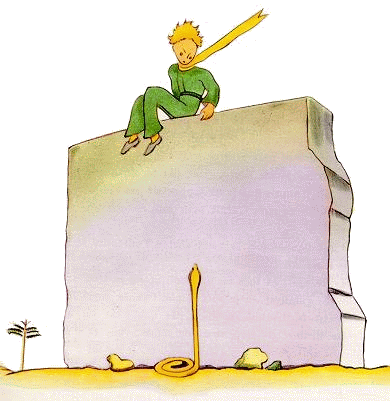
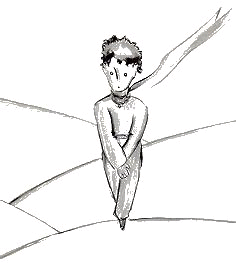
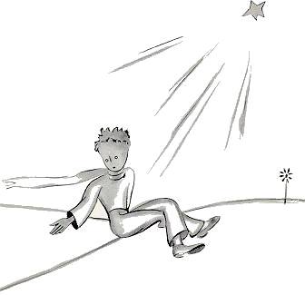

小王子 The Little Prince
第26章
第26章
在水井边上，有一堵残败的旧石墙。第二天傍晚，我干完活儿回来，远远地看见小王子两腿悬空地坐在断墙上。我还听见他在说话：
“难道你不记得了？”他说。“根本不是这儿！”
想必有一个声音在回答他，只见他在反驳：
“对！对！是今天，可不是这个地方……”
我往石墙走去。我既没看见人影，也没听见人声。但是小王子又在说：
“……那当然。在沙地上，你会看到我的足迹从哪儿开始的。你只要等着我就行了。今天夜里我就去那儿。”
我离石墙只有二十米了，可还是什么也没看见。
停了一会儿，小王子又说道：
“你的毒液管用吗？你有把握不会让我难受很久吗？”
我心头猛地揪紧，停下了脚步，可我还是什么也不明白。
“现在，来吧，”小王子说，“……我要下来了！”这时，我低头朝墙脚看去，不由得吓了一跳！只见一条半分钟就能叫人致命的黄蛇，昂然竖起身子对着小王子。我一边伸手去掏手枪，一边撒腿往前奔去。可是，那条蛇听见我的声音，就像一条水柱骤然跌落下来，缓缓渗入沙地，不慌不忙地钻进石缝中去，发出轻微的金属声。
我赶到墙边，正好接住从墙上跳下的小王子，把这个脸色白得像雪的小家伙抱在怀里。
“这是怎么回事！你居然跟蛇在谈话！”
我解开他一直戴着的金黄色围巾。我用水沾湿他的太阳穴，给他喝了点水。可此刻我不敢再问他什么。他神色凝重地望着我，用双臂搂住我的脖子。我感觉到他的心跳，就像被枪弹击中濒临死亡的小鸟的心跳。他对我说：
“我很高兴，你找到了飞机上缺少的东西。你可以回家了……”
“你怎么知道的？”
我正想告诉他，就在刚才，在眼看没有希望的情况下，我修好了飞机！
他没回答我的问题，但接着说：
“我也一样，今天，我要回家了……”
然后，忧郁地说：
“那要远得多……难得多……”
我意识到发生了一件非同寻常的事情。我把他像小孩那样抱在怀里，只觉得他在笔直地滑入一个深渊，而我全然无法拉住他……
他的目光很严肃，视线消失在很远很远的地方。
“我有你的绵羊。我有绵羊的箱子。还有嘴罩……”
说着，他忧郁地微微一笑。
我等了很久。我感到他的身子渐渐暖了起来：
“小家伙，你受惊了……”
他刚才受惊了，可不是！但他轻轻地笑了起来：
“今天晚上我要受更大的惊……”
一种无法补救的感觉，再一次使我凉到了心里。想到从此就再也听不到他的笑声，我感到受不了。他的笑声对我来说，就像沙漠中的清泉。
“小家伙，我还想听到你咯咯地笑……”
可是他对我说：
“到今天夜里，就是一年了。我的星星就在我去年降落的地方顶上……”
“小家伙，蛇啊，相约啊，星星啊，敢情只是场恶梦吧……”
可是他不回答我的问题。他对我说：
“重要的东西是看不见的……”
“可不是……”
“这就好比花儿一样。要是你喜欢一朵花儿，而她在一颗星星上，那你夜里看着天空，就会觉得很美。所有的星星都像开满了花儿。”
“可不是……”
“这就好比水一样。昨天你给我喝的水，有了那辘轳和吊绳，就像一首乐曲……你还记得吧……那水真好喝。”
“可不是……”
“夜里，你要抬头望着满天的星星。我那颗实在太小了，我都没法指给你看它在哪儿。这样倒也好。我的星星，对你来说就是满天星星中的一颗。所以，你会爱这满天的星星……所有的星星都会是你的朋友。我还要给你一件礼物……”
他又笑了起来。
“呵！小家伙，小家伙，我喜欢听到这笑声！”
“这正是我的礼物……就像那水……”
“你想说什么？”
“人们眼里的星星，并不是一样的。对旅行的人来说，星星是向导。对有些人来说，它们只不过是天空微弱的亮光。对另一些学者来说，它们就是要探讨的问题。对我那个商人来说，它们就是金子。但是所有这些星星都是静默的。而你，你的那些星星是谁也不曾见过的……”
“你想说什么呢？”
“当你在夜里望着天空时，既然我就在其中的一颗星星上面，既然我在其中一颗星星上笑着，那么对你来说，就好像满天的星星都在笑。只有你一个人，看见的是会笑的星星！”
说着他又笑了。
“当你感到心情平静以后（每个人总会让自己的心情平静下来），你会因为认识了我而感到高兴。你会永远是我的朋友。你会想要跟我一起笑。有时候，你会心念一动，就打开窗子……你的朋友会惊奇地看到，你望着天空在笑。于是你会对他们说：‘是的，我看见这些星星就会笑！’他们会以为你疯了。我给你闹了个恶作剧……”
说着他又笑了。
“这样一来，我给你的仿佛不是星星，而是些会笑的小铃铛……”
“今天夜里……你知道……你不要来。”
“我决不离开你。”
“我看上去会很痛苦……会有点像死去的样子。就是这么回事。你还是别看见的好，没这必要。”
“我决不离开你。”
可是他担心起来。
“我这么说……也是因为蛇的缘故。你可别让它咬着了……蛇，都是很坏的。它们无缘无故也会咬人……”
“我决不离开你。”
不过，他想到了什么，又觉得放心了：
“可也是，它们咬第二口时，已经没有毒液了……”
当天夜里，我没看见他起程。他悄没声儿地走了。我好不容易赶上他时，他仍然执著地快步往前走。他只是对我说：
“啊！你来了……”
说完他就拉住我的手。可是他又感到不安起来：
“你不该来的。你会难过的。我看上去会像死去一样，可那不是真的……”
我不作声。
“你是明白的。路太远了。我没法带走这副躯壳。它太沉了。”
我不作声。
“可这就像一棵老树脱下的树皮。脱下一层树皮，是用不着伤心的……”
我不作声。
他有点气馁。但他重又打起精神：
“你知道，这样挺好。我也会望着满天星星的。每颗星星都会有一个生锈辘轳的水井。所有的星星都会倒水给我喝……”
我不作声。
“这真是太有趣了！你有五亿个铃铛，我有五亿个水井……”
他也不作声了，因为他哭了……
“到了。让我独自跨出一步吧。”
说着他坐了下来，因为他害怕。
他又说：
“你知道……我的花儿……我对她负有责任！她是那么柔弱！她是那么天真。她只有四根微不足道的刺，用来抵御整个世界……”
我也坐下，因为我没法再站着了。他说：
“好了……没别的要说了……”
他稍微犹豫了一下，随即站了起来。他往前跨出了一步，而我却动弹不得。
只见他的脚踝边上闪过一道黄光。片刻间他一动不动。他没有叫喊。他像一棵树那样缓缓地倒下。由于是沙地，甚至都没有一点声响。
